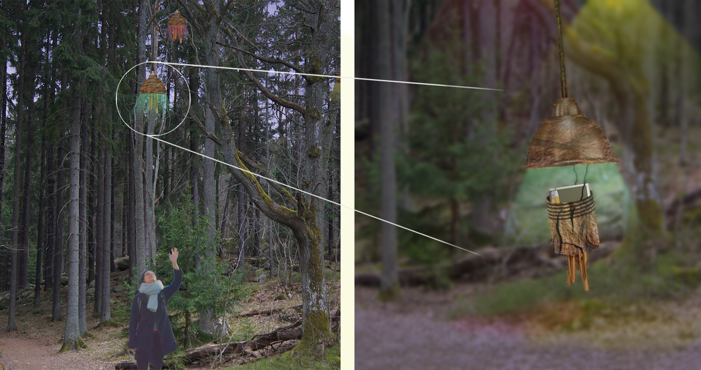

How can interaction design contribute to placemaking by
drawing diverse people together in opportunities to interact,
play, share experiences and practice care?
In this work, I address challenges of situated alienation from
people and place. Using interaction design for placemaking, light
is shed on a design space of social places with opportunities
for spontaneous and planned activities for one person, friends and
strangers. I unpack aspects of placemaking through processes and artifacts
with a research through design methodology.
Four conceptual design instances were created from
first-person and participatory perspectives, drawing potentials
for engagement and considerations for encompassing respect
(meaning vigilant of neoliberal capitalist and masculine power
relations). I contribute with sensitizing questions making
this design space more accessible for interaction designers.
These are detailed in the paper.
Below are descriptions of four resulting designs from the project that are situated around the neighbourhood Stora Lappkärrsberget.
Screamtree
Screamtree is an interactive artwork located in the central square
of the neighbourhood. The neighbourhood has a tradition of
screaming out loud for a couple of minutes starting at ten o’clock in the
evening once a week.
The scream is experienced as a fun, shared activity as a kind of release.
Screamtree feeds on the loudness of screams and its visual appearance is altered
in real-time. The design explores this social happening by adding
an incentive to congregate. Screamtree intends to contribute to
(i) a heightening of feelings of weird and shared enjoyment through the thrill provided by the risk of making yourself vulnerable to embarrassment;
(ii) the social "set up", which is the slight and temporary change of norm of social interaction that can lead to conversations in the moment or later through emerging relationships like those of familiar strangers; and
(iii) in the longer-term perspective, a social cohesion of the place through this face to face ritualistic collective activity.
Tunnelbeat
Tunnelbeat is a musically enhanced tunnel where a rhythmic
instrumental soundscape is triggered by, sonically fed by and
synced to pedestrians walking. This is made possible with piezo
microphones in the ground and an algorithm that fits and distorts the
sounds into the soundscape that is heard through speakers placed
in the tunnel’s light compartments. The recorded percussion from
the pedestrians stays temporarily as a part of the soundscape.
The improvisational space the music offers can be filled
percussively and melodically. This is meant to provoke favorable
circumstances for people to spontaneously acknowledge or interact
with one another. The soundscape triggers unpredictably, not too
often and not at night to avoid problematic disruption and
congregation. The soundscape goes in laid-back styles that
flourish in tunnel reverberation, like this,
that or this.

Treebells
Four treebells are hanging in a tree. Each is a container of a
notebook and a pen, with motorized vertical movement, making a particular
treebell available at various times to unscrew. The design draws from a practice
of sharing in book format that is often found at hike sites
like summits in enclosed boxes. People commonly share confessions,
gratitude, advice, opinions, wishes; sometimes quite intimate things.
Wind chimes hang from the Treebells and mixes with the soundscape
of the coastal forest to gently make people aware of the place. The varying
light emmitted from the Treebells corresponds with the current
environmental color palette, and makes it possible to engage with the
content in darkness.
The unpredictable availability intends to create a more engaging, rich and living
atmosphere around the books compared to a more static environment
where the site can be exhausted at one time.
Phonehat
At an outlook is a calling-only station, placed within sight
and connected to a receiving-only station. The calling-only enables
calls and messages to be made. The receiving-only station
can pick up calls and listen to messages.
The calls have scaffolding for a personal and ludicrous quiz that
results in horoscopic advice, only to be accessed from the receiving station.
Horoscopes’ appeal comes from their useful ambiguity and how they
encourage contemplation of issues and possibilities in ways that might go overlooked.
This scaffolding indends to orchestrate collaborative introspections in a
relaxed and playful way.
Background
I approached this project from feminist technoscience thought, drawing initially from of Donna Haraway [1],
Maria Puig de la Bellacasa [2], and later Lefebvre [3]. Their thoughts helped me see the way relations are manifested
as a clear path to other ways of living, than what is encouraged in hegemony neoliberal capitalist structures.
Thanks to valuable advice to follow feminist epistemology where knowledge is seen as always situated,
I turned my attention to where I live. I started to (re-)engage with the local tenant association, but
soon a step back seemed valuable. The organization appeared to be struggling with
sharing understanding and willingness to work with each other in respect. And so I saw value in addressing
the neighbourhood not through coming together over shared issues, but more in terms of a less
directed and more noncommital manner.
Especially intriguing was this approach in my neighbourhood which is a very geographically
confined place of large and frequent in- and out-flow of multicultural university students. What I was interested in
then was essentially to explore participatory ways of imagining and situating
interactive systems acting culture bearers for certain ways of relating to each other: How can interaction
design contribute to placemaking through sites of encounter intending to draw diverse people together where
they can interact, play, share experiences, practice care and potentially develop kinship?
Design Process
I began by embracing notions that are considered meaningful for mentioned social experiences,
like spontaneity, playfulness, curiosity, interpretative appropriation, serendipity, and unpredictability.
I engaged in a phenomenological dialogue with the larger outdoor neighbourhood area through walking,
biking, photographing and general attentive living, where certain places
and events stuck to me as particularly potent.
Through common design techniques of collaging and drawing on photographs, writing narratives,
detailing technical implementation of ideas and discussing with peers, some ideas began to take shape.
I brought the most divergent and intriguing ideas into an in-situ workshop with a diverse crowd of residents,
where we bodystormed, enacted and reflected on the places the interaction design ideas contributed to making.
Reflections on this workshop lay the basis of the insights (design potentials and considerations) I
offer interaction designers entering this design space, which are outlined in the paper.
Skills
Design practice: Concrete problem formulation derived from "grand theories" and lived experience, Concept designs, Workshop design and execution, Hybrid fiction Software: Photoshop, Illustrator Hardware: Cardboard props
References
[1] Donna Jeanne Haraway. 2003. The companion species manifesto: Dogs, people, and significant otherness. Vol. 1. Prickly Paradigm Press Chicago.
[2] María Puig de la Bellacasa. 2012. "Nothing comes without its world": thinking with care. The Sociological Review 60, 2 (2012), 197–216.
[3] Mark Purcell and Shannon K Tyman. 2018. Cultivating food as a right to the city. In Urban Gardening as Politics. Routledge, 62–81.